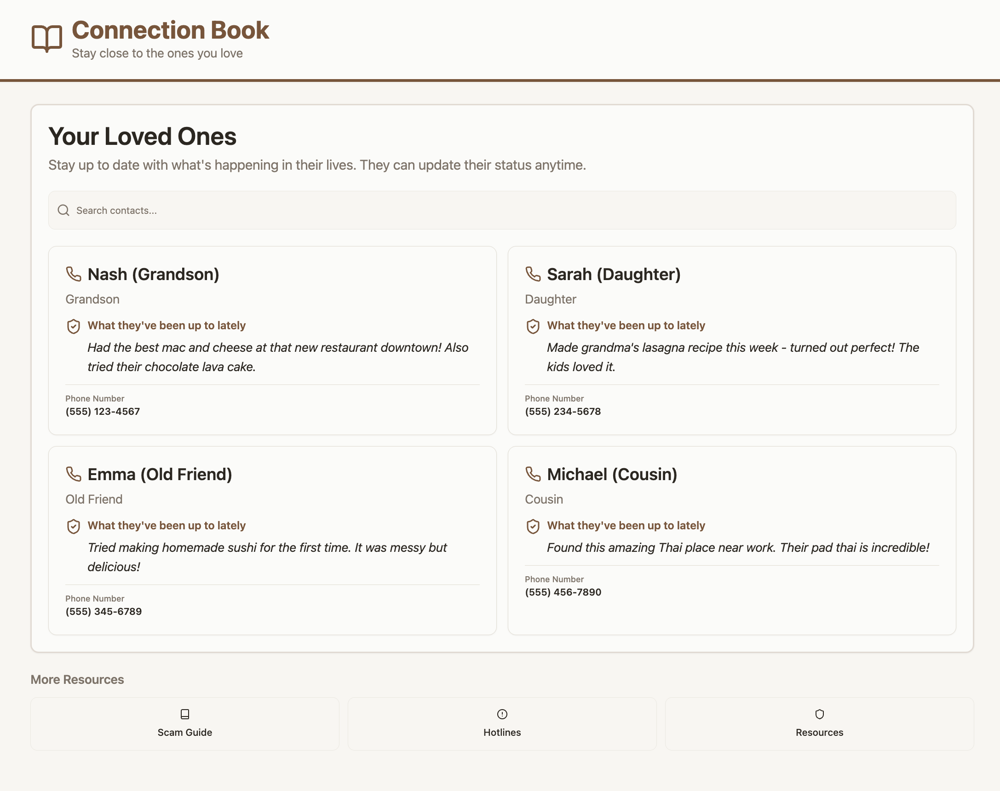
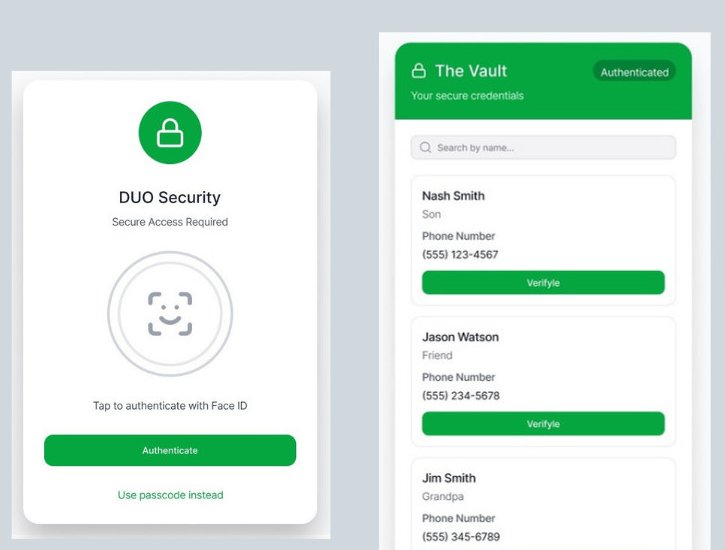
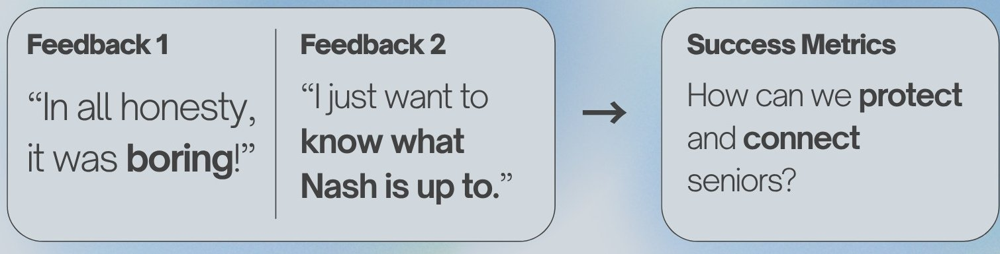
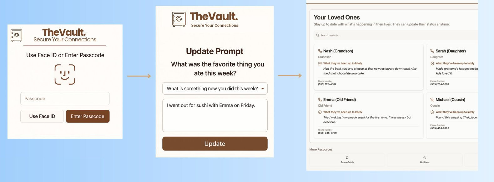

TheVault. started as a digital phonebook to protect older adults from impersonation scams and ended up closer to a family check-in app. My team of five built it for Sparkathon 2025, a designathon run by Pomona Ventures with 30 teams.
Who We Designed For
We built the project around Jim, an 83-year-old who had recently been targeted by impersonation scams. When we asked what mattered most to him, he said, "The most important thing to me is Nash." Nash is his grandson and one of my teammates.
Our surveys and interviews showed a pretty consistent pattern. Jim loves his family but doesn't see them often, texting is how he stays in touch, and he trusts them completely. Scammers take advantage of that trust, and AI tools make it easy to sound like a grandkid in trouble. When an urgent request shows up, Jim has no quick, personal way to check who he's actually talking to.
Exploring Directions
We explored three directions: bringing back the phonebook, verification methods like Face ID, and scam-flagging technology. Then we looked at how to combine them into one thing Jim would actually use.
First Prototype

Our first version was a locked phonebook, where Jim opens it with Face ID or a passcode, finds the person contacting him, and taps Verify. We kept the layout close to a paper phonebook: one list of names, the relationship under each, and one big button per person. Jim could use it on his own, and the verification worked.
What Testing Told Us

When we tested it, one person told us, "In all honesty, it was boring!" Another said, "I just want to know what Nash is up to," and that comment changed our direction.
It turned out Jim didn't care much about a security tool. What he really wanted was to feel closer to his family, and an app he only opens when something feels off is one he'd probably forget about. So our goal became keeping seniors safe and keeping them connected.
The Redesign

In the final version, family members answer a short prompt each week, like "What was the favorite thing you ate this week?" Their answers show up on each person's card under "What they've been up to lately," right next to their phone number. When Jim opens the app, he can see what Nash has been up to that week.
The safety features are still there too, since TheVault. keeps a trusted number for each person and the bottom of the screen links to a scam guide, hotline numbers, and a database of known scam numbers and URLs.
The look changed a lot along the way, too, because we tested several color schemes and layouts with older users to find the friendliest and easiest to read, which is how we ended up with the warm brown and cream in the final version.
My Role
I worked on programming the demo, user testing, and visual design, and we built the final prototype with Lovable and ChatGPT. We didn't place, but it was a great first designathon and I'll be doing it again!
Try the demo View our final presentation
Through This Project I've Learned and Practiced
Human-Centered Design
Human-Centered Design, including user research through surveys and interviews, iterative prototyping, and feedback-driven design.
User Testing
User testing by running structured tests to validate design decisions and catch usability issues.
Accessible Design
Designing for accessibility and non-technical audiences.
Rapid Prototyping
Rapid prototyping under designathon time constraints.
Presenting to Judges
Presenting a product and research rationale to a panel of judges.